Here is a showcase of many games that I have created. The games were created in a wide variety of programs, including Unity and Unreal Engine. I will add my role in the development of the game. The list will be ordered by the most recent games. If the game is available to download/play, I will provide a link.
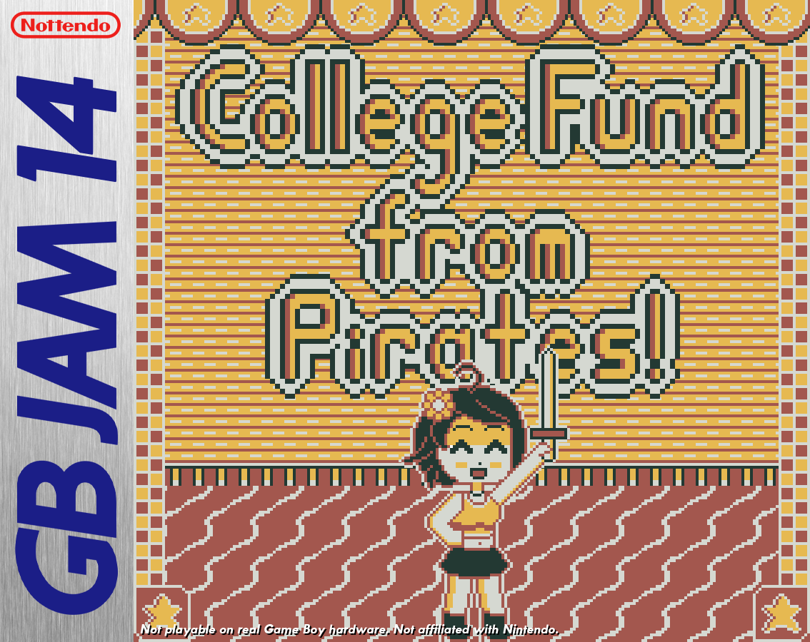
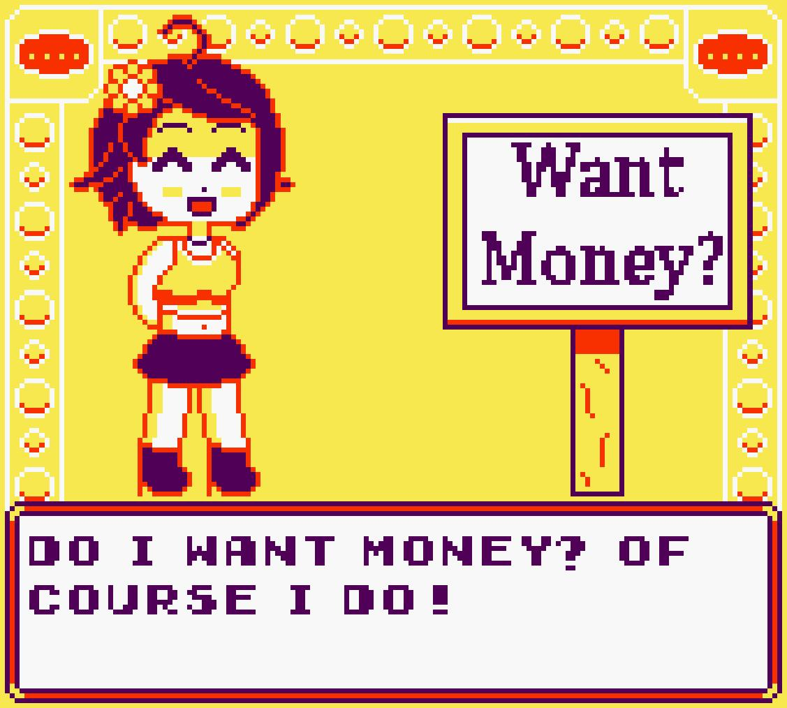
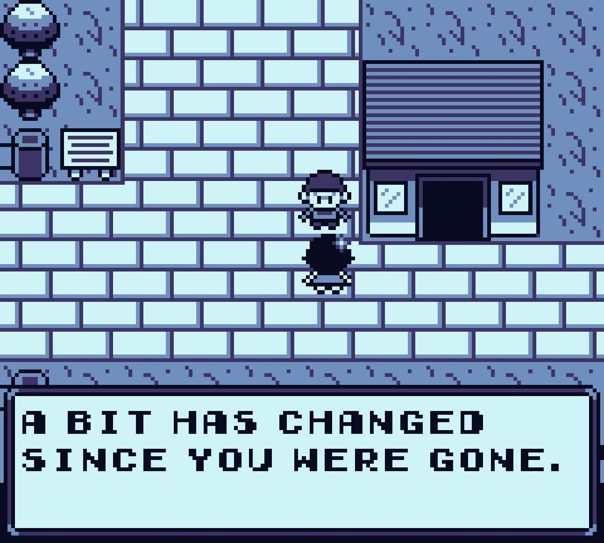
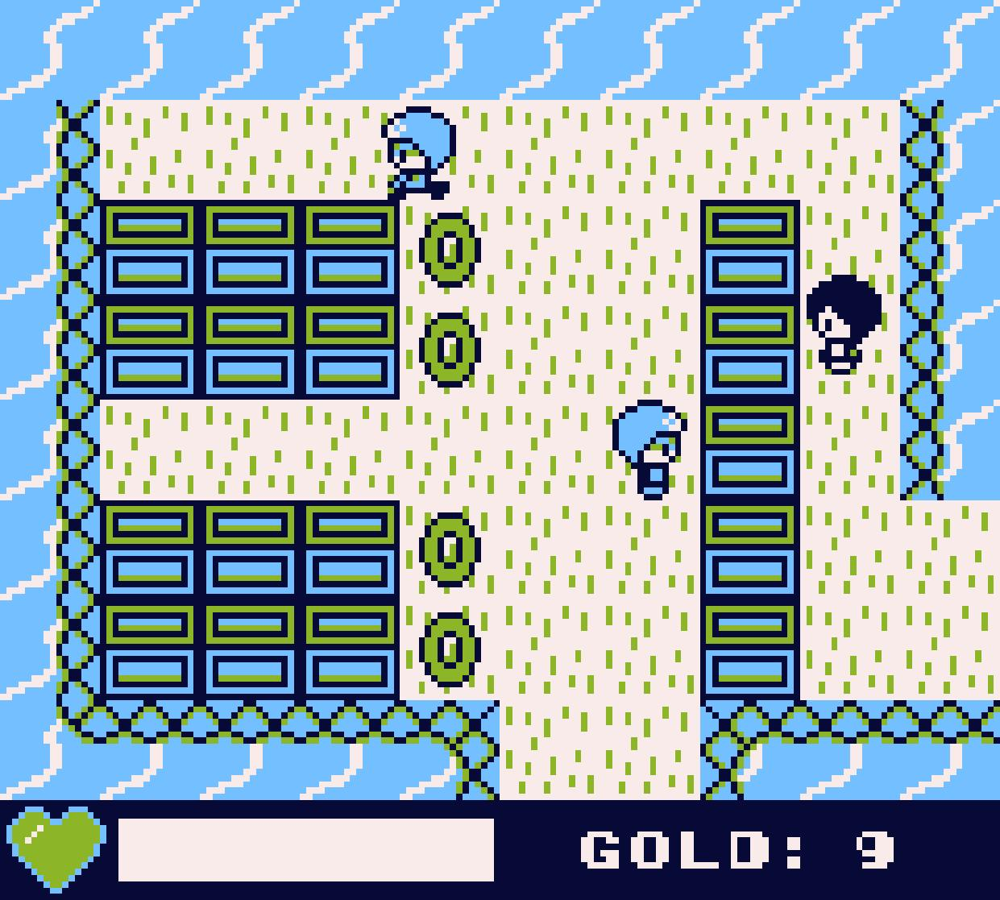
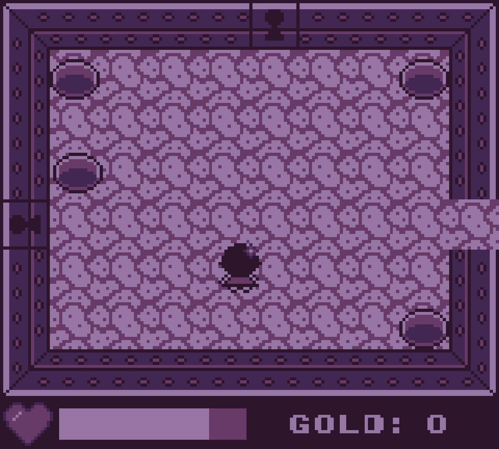
College Fund from Pirates!
Development Period: September 11th 2026 - September 21st 2026
Game Engine: Unity 6 (6000.3.10f1)
My Role: Game Design, Programming, Sprite Art
This game was created for GBJAM 14. The overall goal of the jam was to create a game that invokes the spirit of the Gameboy.
As such, there were many restrictions the games had to adhere to, such as only displaying four colors at a time and having an aspect ratio of 160x144 pixels.
Outside of the general Gameboy theme, the secondary theme was 'old gold'.
Using the GB Unity Template by DoctorM64, I created a top down adventure game, inspired by Link's Awakening and the first generation of Pokémon.
The game has you raiding a pirate base in order to steal their gold so you can pay for college.
It begins as a stealth game, but once you enter the dungeon, you get a sword, and can engage in combat similar to top-down Zelda games.
Out of 630 entries, the game ranked 97th overall, while also scoring 78th in Gameboy Soul and 83rd in Quirkiness.
The game was praised for the writing, which many found amusing. Players also liked the graphics, which did a good job in emulating the feeling of a Gameboy game.
A minor criticism people had was that the opening felt slow, and that the fun gameplay was only in the last third of the game, which is understandable.
Dreadful Damnation
Development Period: August 23rd 2026 - August 30th 2026
Game Engine: Unity 6 (6000.3.10f1)
My Role: Game Design, Programming, Sprite Art
This game was created for the Brackeys Game Jam 2026.2. The theme of the jam was 'trust no one'.
I decided to use this game jam as an opportunity to make my first horror game, which I had been thinking about prior to the jam.
The game is a puzzle horror game, where you find yourself stuck inside a haunted house with a ghost girl forcing you to solve puzzles so you can escape.
You must inspect your surroundings in order to find clues, with some items giving you false information that can lead to your demise.
Making a horror game was definitely outside of my comfort zone, but I think it turned out well in the end.
I made use of lighting and post processing to make the game as unnerving as possible.
One aspect of the horror that I am proud of is the jumpscare that plays during the opening and when you game over, which has the lighting change to a blood red with the ghost girl quickly approaching you from offscreen.
Out of 2,252 entries, the game ranked 272nd overall, while also scoring 154th in Visuals and 249h in Gameplay.
The game was praised for its spooky visuals, with many saying that they got scared by the jumpscare. The puzzles were also liked for not being too hard or too easy.
One issue that only a couple of players had was that they got stuck on the puzzles that had you type out answers. I made the answers require capitalization and had a bit of text saying the answers needed proper captitalization, but some didn't understand my intentions.
I updated the game so you can input an all lowercase answer and still get it right.
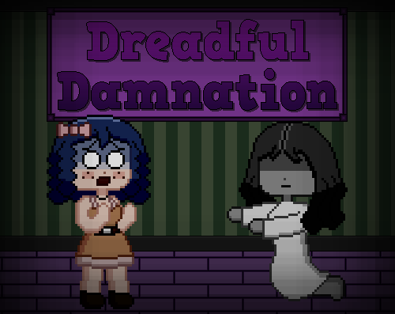
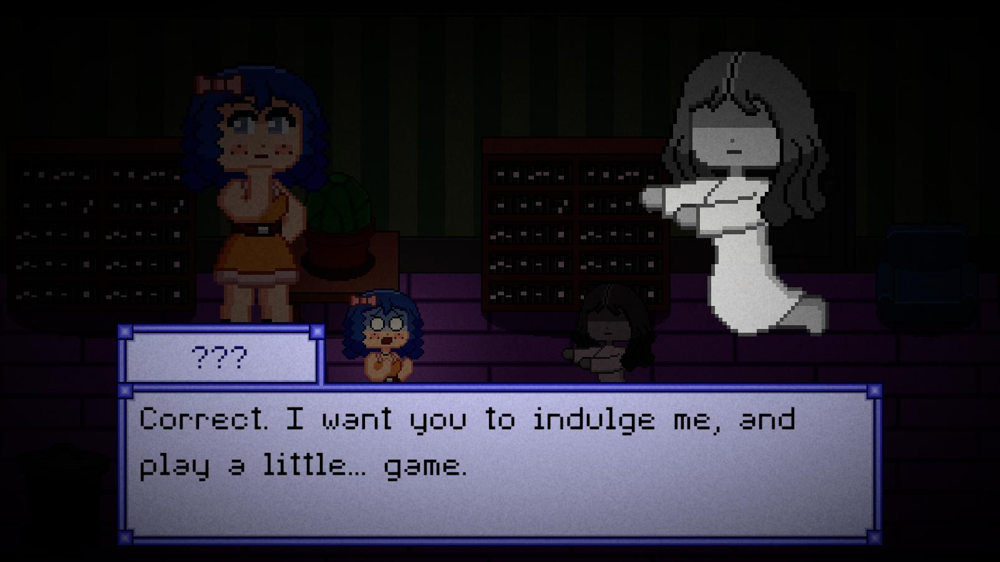
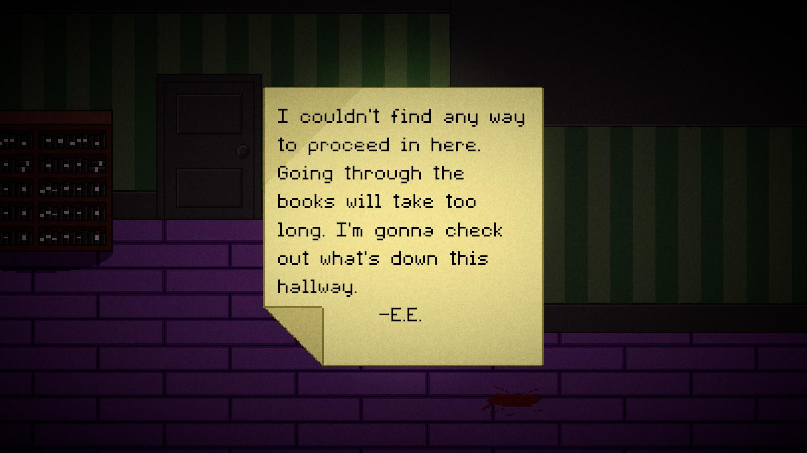
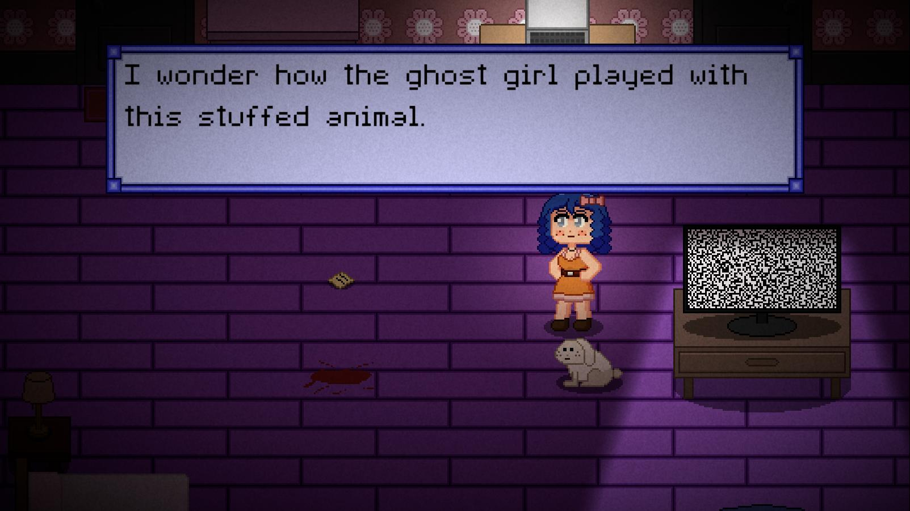
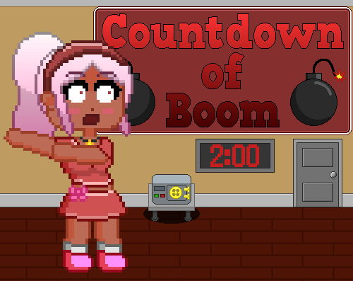
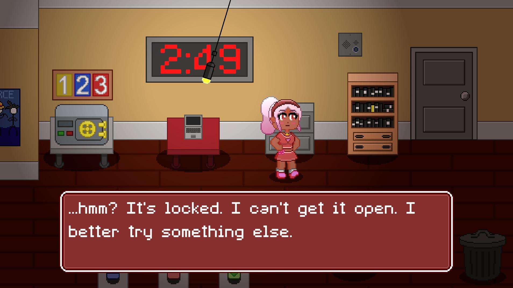
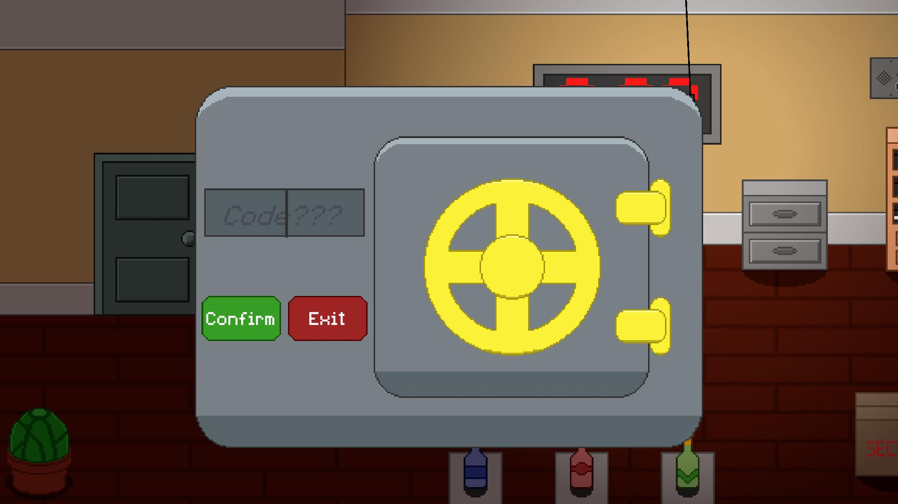
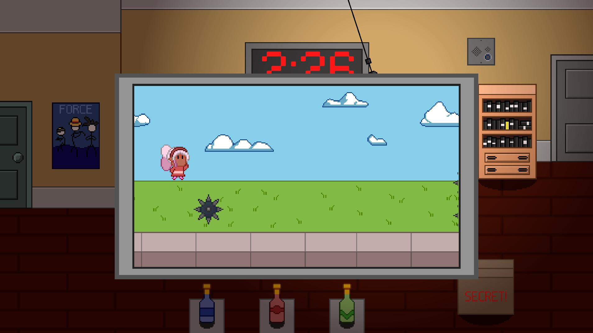
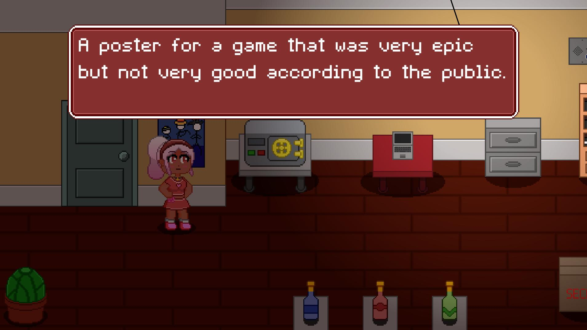
Countdown of Boom
Development Period: July 22nd 2026 - July 26th 2026
Game Engine: Unity 6 (6000.3.10f1)
My Role: Game Design, Programming, Sprite Art
This game was made for the GMTK Game Jam 2026. The theme of the jam was 'countdown'.
I decided to make a short escape room game where you are trapped in a room that is set to explode in a couple minutes.
You must interact with your surroundings to figure out how to unlock the door so you can escape.
Many of the objects in the room lead to clues, while others are there to waste time.
This game jam served as a nice challenge for me. As someone who usually participates in jams that last at least a week, it was interesting to join one that lasted four days.
On top of that, the first game jam I participated in was GMTK 2025, so it was nice to be back with a years worth of experience.
The jam had 10,525 entries, and while games weren't ranked overall, my game did get 660th in Narrative, 1213rd in Artwork, and 1715th in Enjoyment.
The game was liked for its art, which added to the intense situation the player is in. The puzzles were also liked, escpecially since the answers change each time you play.
A Serious First Day on the Job
Development Period: June 19th 2026 - June 27th 2026
Game Engine: Unity 6 (6000.3.10f1)
My Role: Game Design, Programming, Sprite Art
This game was made for The Very Serious Juniper Dev Game Jam. The serious theme of the jam was 'spin to win'.
Playing into the seriousness of the jam, I decided to make a game that documents a serious businesswoman's first day at a new job.
She undergoes a very strange orientation, which involves playing various spinning-based minigames.
Along the way, she meets her new coworkers, who all have funny quirks about them, which is not what she expected.
This is my second minigame collection, and while smaller in scope, there is more polish overall. First, there is a dedicated screen to play the minigames, which is new.
The game also has a focus on cutscenes where characters move around without player input, which was very fun to work on.
Out of 3,533 entries, the game ranked 500th overall, while also scoring 170th in Seriousness and 527th in Enjoyment.
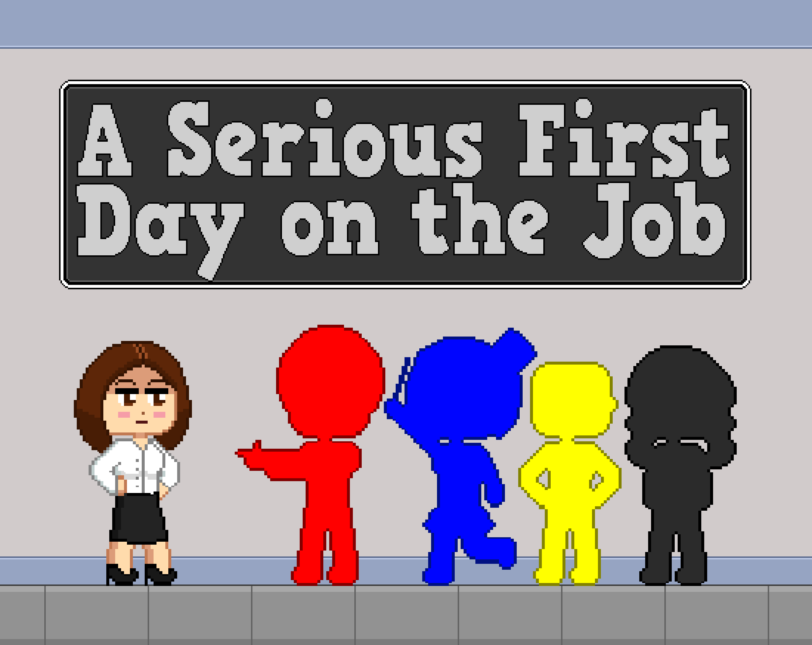
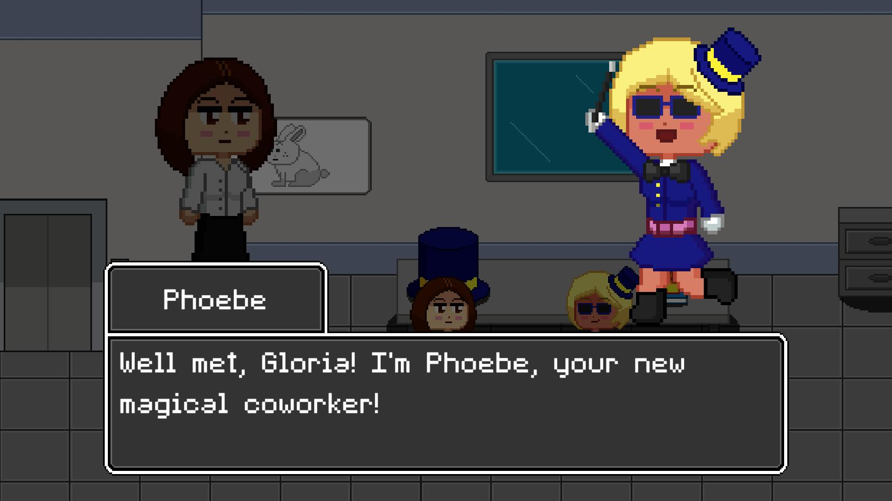
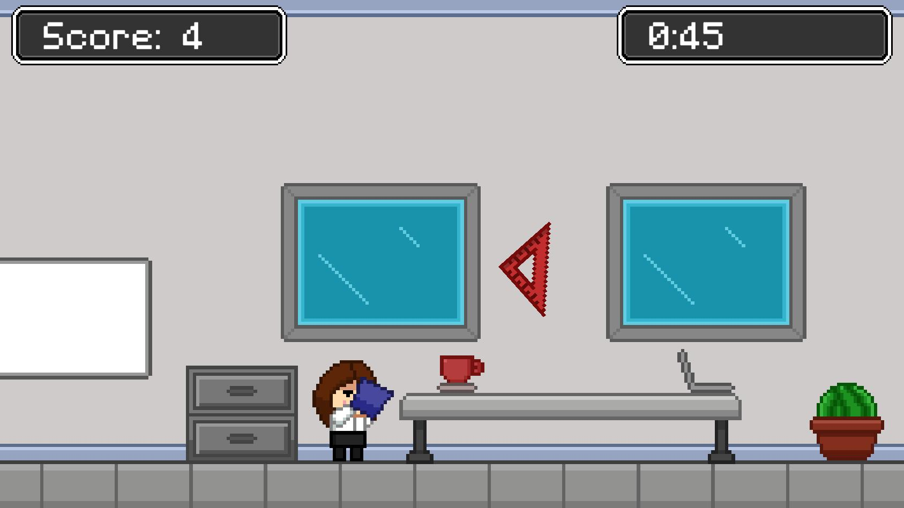
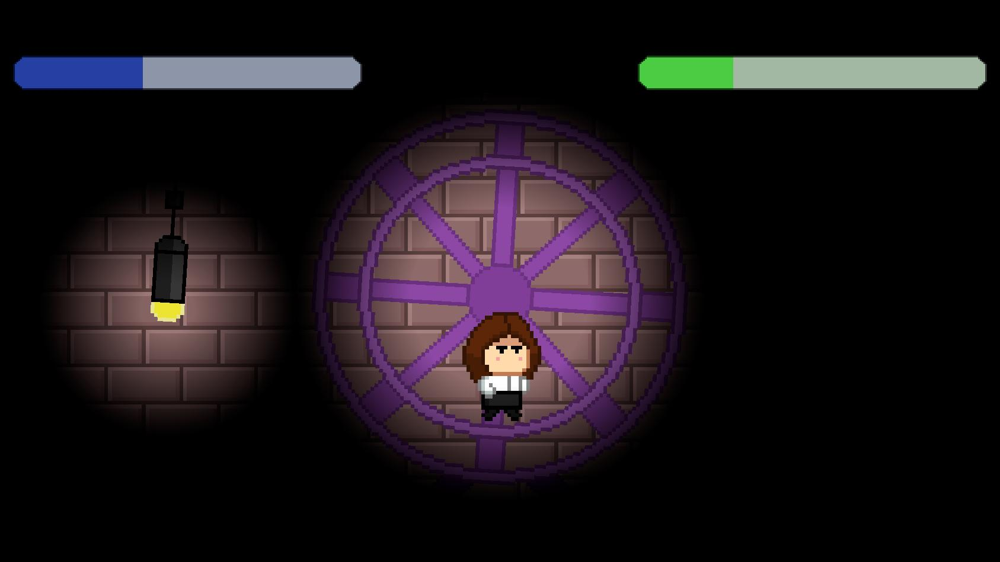
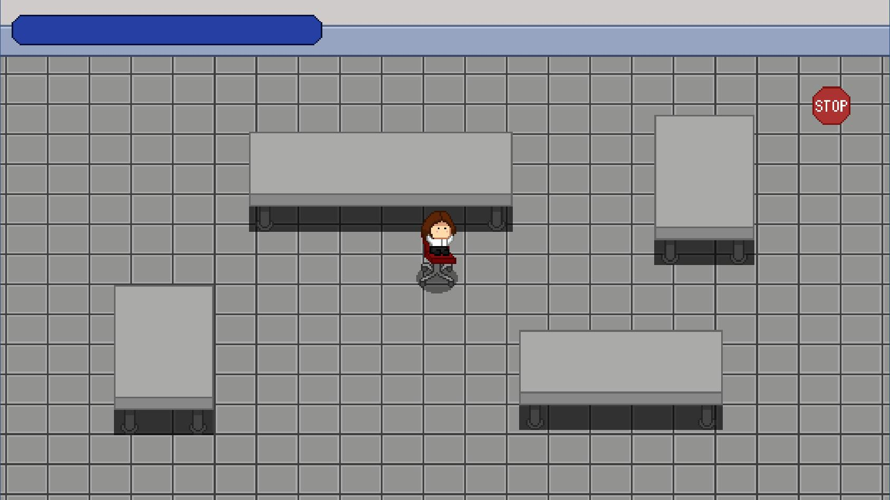
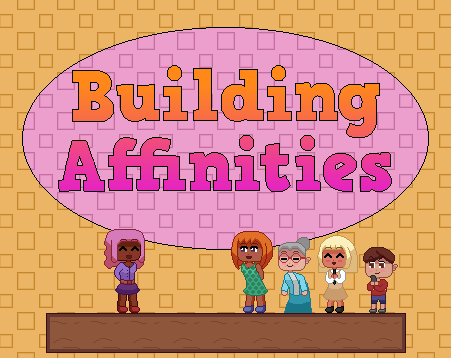
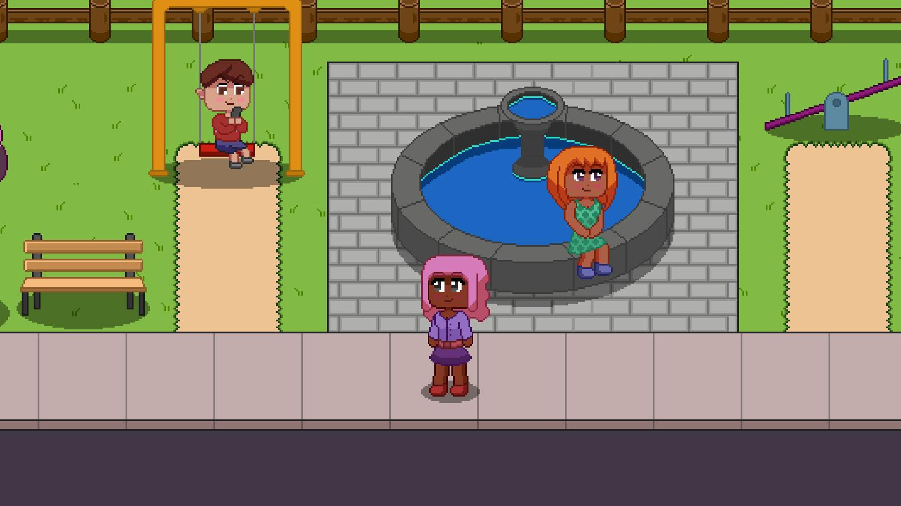
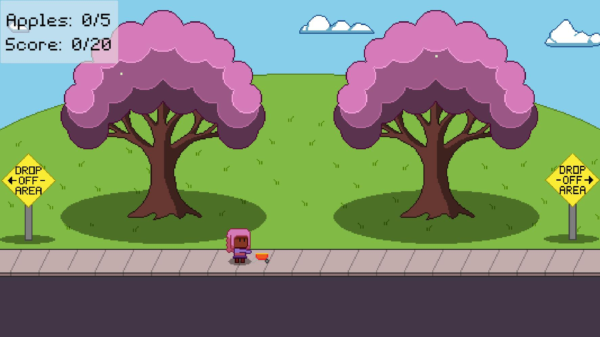
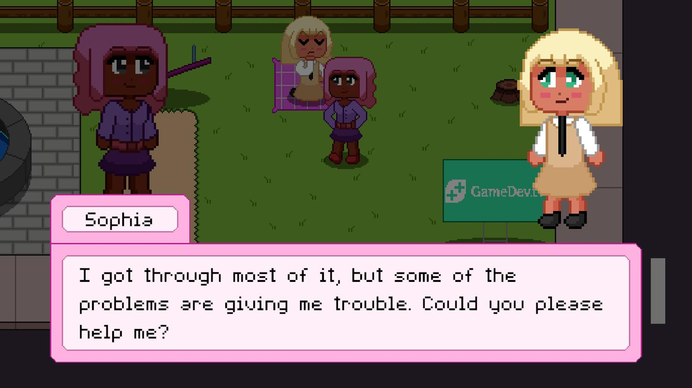
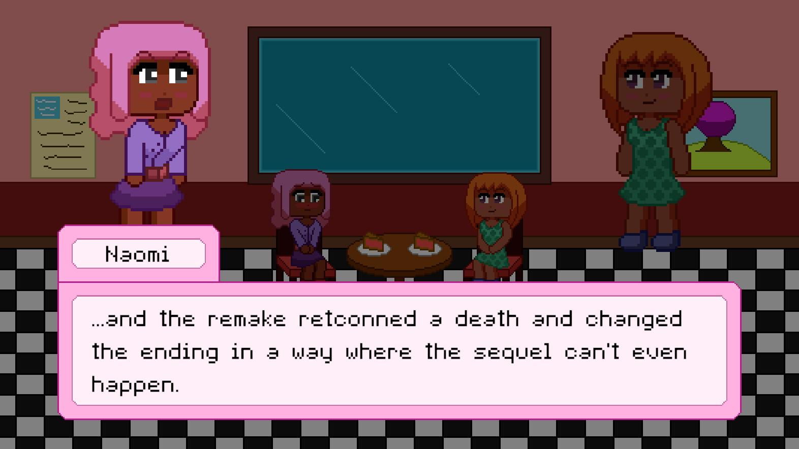
Building Affinities
Development Period: May 15th 2026 - May 25th 2026
Game Engine: Unity 6 (6000.3.10f1)
My Role: Game Design, Programming, Sprite Art
This game was created for the GameDev.tv Game Jam 2026. The theme of the jam was 'connections'.
I decided to create a life simulation game with various minigames. You take control of Naomi, who moved to a new town, and over the course of three days, you build a friendship with various locals.
Each person has their own small storyline where you learn more about them, as well as a unique minigame that you must play.
Many of the minigames are bite sized versions of other games that I have made in the past, both as a way to see how I've improved as a programmer, and as a way to speed up game development.
I also used this game as an opportunity to write romance, and I think I did a decent job.
This game is the one that means the most to me, for many reasons. The theme of the jam was teased a few days before the overall jam began, and I spent that time brainstorming all the ideas that would end up in the final game.
This was also one of the first games I made where I spent a lot of time on the characters. Not only did I give them names for the first time, but there was also a ton of them, and I enjoyed writing their storylines, especially the romance.
I also used this game to test out a new artstyle, which involved more detailed humans and colored outlines, and it turned out great.
Out of 833 entries, the game ranked 54th overall, while also scoring 42nd in Story and 61st in Aesthetics.
The game was praised for its gameplay variety, with people saying that the various minigames kept it from getting old. The players also enjoyed the story, with many quite enjoying the characters.
Dauntless Dream
Development Period: April 1st 2026 - April 15th 2026
Game Engine: Unity 6 (6000.3.10f1)
My Role: Game Design, Programming, Sprite Art
This game was created for the GameName Game Jam. The theme of the jam was 'invincible'.
I decided to make a 2D platformer game that tells a story. You play as this young girl who is unable to stand up to her verbally abusive father.
She goes to sleeps and ends up in a dream world, where she is tasked to strengthen her resolve in order to stand up to herself.
As she gets stronger, the damage she takes from enemies decreases, eventually becoming invincible.
As the time of this game's release, it was my biggest project yet. I made a few platformers before, and this game was the culmination of all that I learned.
This is also the first game I made where I focused on the story, since it contributed to the theme of the jam.
As such, I spent a lot of time implementing dialogue boxes with character portraits, which I am very proud of, and have reused in future games.
Out of 347 entries, the game ranked 65th overall, while also scoring 35th in Art and 76th in Enjoyment.
The gameplay and story were well like by the players, as well as the art. A few criticisms some people had included the slow opening and a few minor bugs.
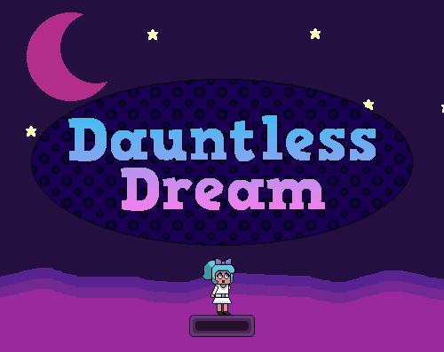
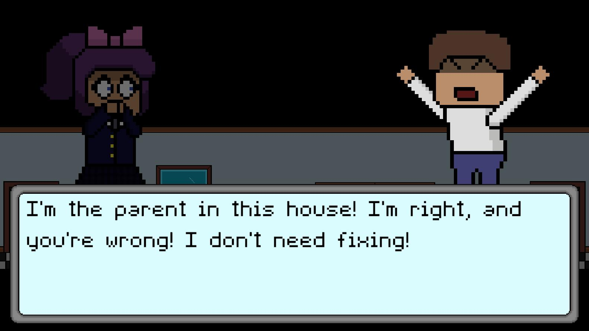
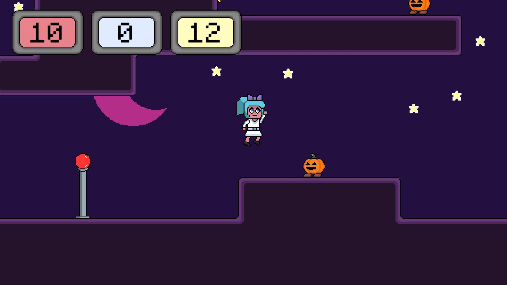
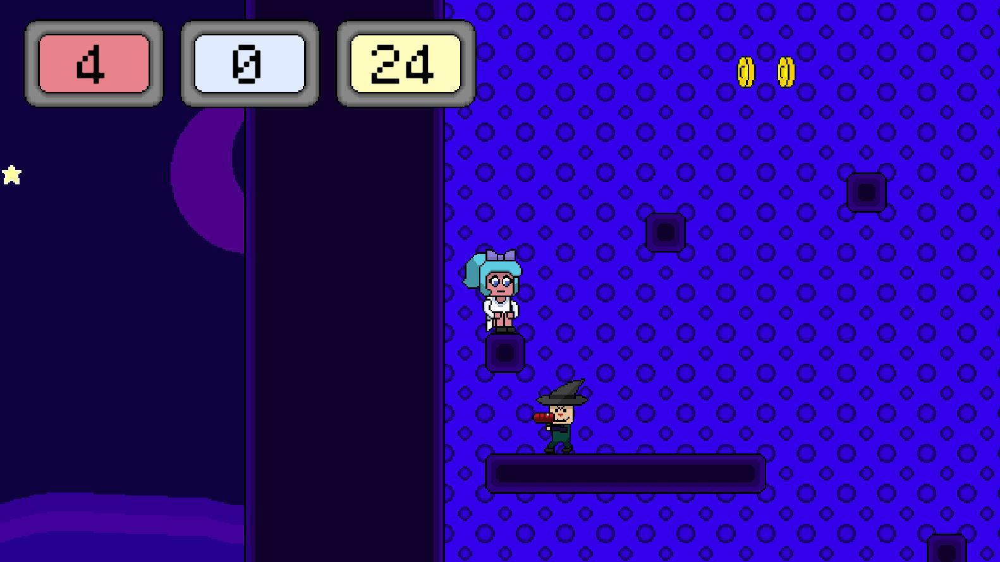
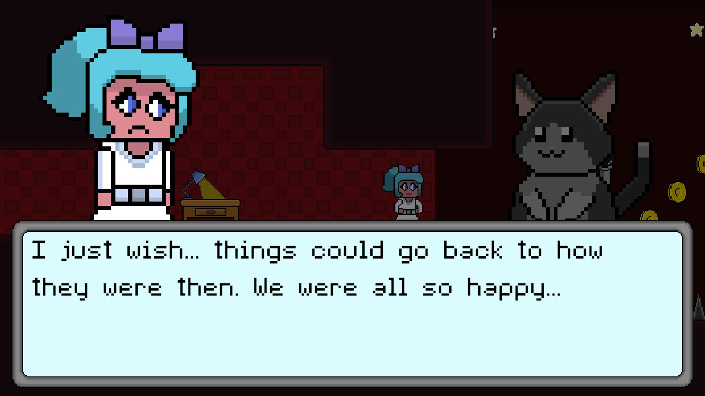
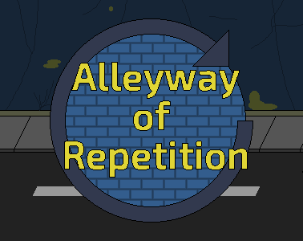
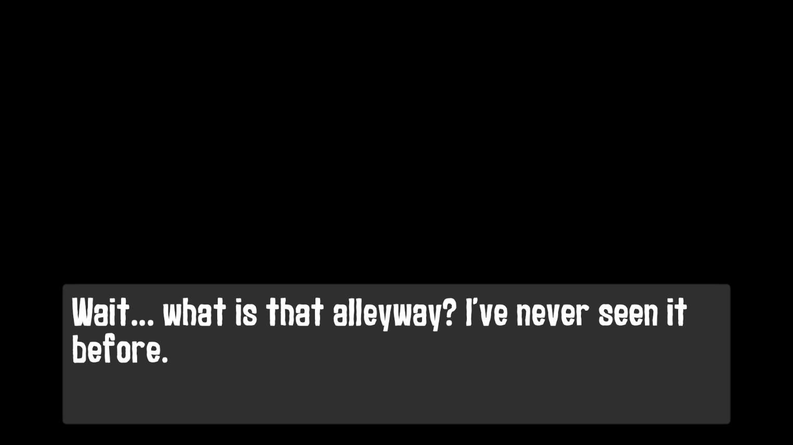
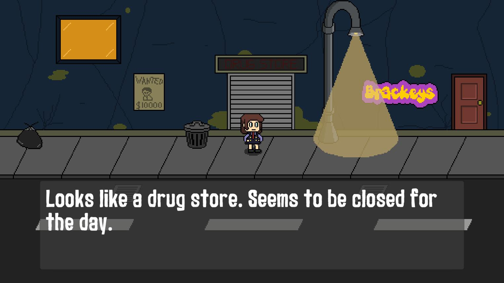
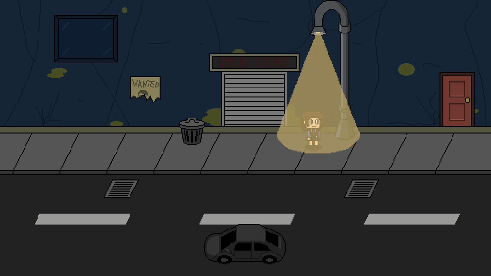
Alleyway of Repetition
Development Period: February 15th 2026 - February 22nd 2026
Game Engine: Unity 6 (6000.3.8f1)
My Role: Game Design, Programming, Sprite Art
This game was made for the Brackeys Game Jam 2026.1. Thetheme of the jam was 'strange places'.
I decided to make a puzzle/adventure game inspired by P.T. You take control of a young woman who has found herself in an alleyway that constantly loops, with minor changes occuring each time, which is where 'strange places' comes in.
You must interact with your surroundings to figure out a way out of the alleyway. The game has five different endings: a true ending, two bad endings, and two joke endings.
This game represents a milestone in my game development journey in multiple ways. Following a game jam a few weeks prior that I didn't feel proud of, I made an effort to improve my overall workflow going forward, starting with this game.
Development was more consistent over the course of the jam, with very little crunch at the end, and I spent more time each day working on the game, which led to a better product.
In terms of game mechanics, this is the first game where interacting with the environment for clues and flavor text began, and would appear in most of my future games.
Out of 1,431 entries, this game ranked 119th overall, while also scoring 75th in Innovation and 113th in Theme.
The game was praised for its interpretation of the theme, as well as all the flavor text.
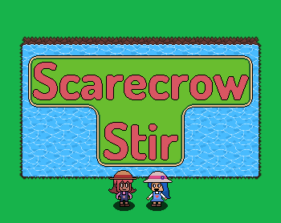
Scarecrow Stir
In November 2025, I participated in the Game Off 2025 game jam, which lasted the entire month. The theme was "wave".
The game is a top down shooter where you must defeat waves of scarecrows attacking your farm.
I was the sole developer of this game, working on game/level design, programming, and art. The game was made in Unity 6.
Press the button below to head to the Itch.io page!
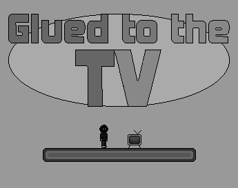
Glued to the TV
In mid October 2025, I took part in the GameDev.tv Halloween Jam 2025, which lasted ten days. It has a visual theme featuring an old TV.
The game is a 2D platformer with a CRT effect where you can buy checkpoints that get increasingly more expensive.
I was the sole developer of this game, working on game/level design, programming, and art. The game was made in Unity 6.
Press the button below to head to the Itch.io page!
The Pumpkin Who Dies Trying
In early October 2025, I participated in the Jamsepticeye Game Jam, which lasted five days. The theme was "Death is an Opportunity".
This game is a simple 2D platformer where you can die to become a ghost and float through objects.
I was the sole developer of this game, working on game/level design, programming, and art. The game was made in Unity 6.
Press the button below to head to the Itch.io page!
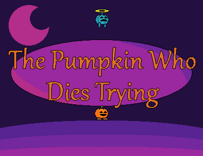
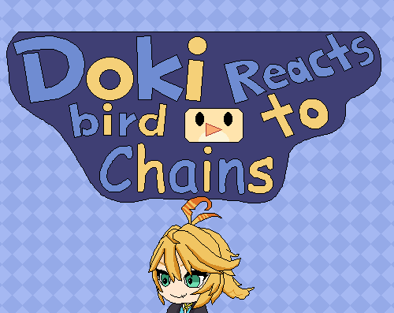
Dokibird Reacts to Chains
In August 2025, I participated in the Doki Jam, where participants had two weeks to create a game based on the theme, "chain reactions".
As the player, you must select the appropriate reaction to give while watching a video to earn points.
I worked on this game on my own, which means I did the game design, programming, and art. The game was made in Unity 6.
Press the button below to head to the Itch.io page!
Pay Your Taxes, Mr. Wizard!
Two of my friends and I got together and created this game for the GMTK Game Jam 2025 (July 30 - August 3). The theme was 'loop', and we had four days to submit the game.
The game was created with Godot, and I was the Art Lead, as well as Game Designer.
Press the button below to head to the Itch.io page!
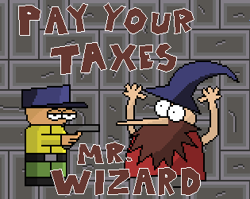
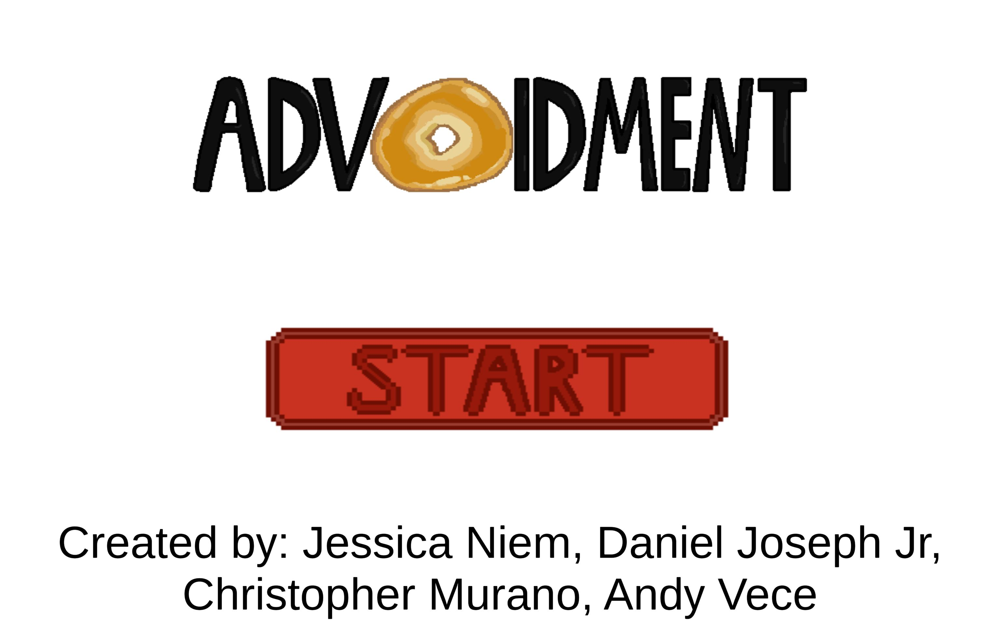
Advoidment
This is a game that I created in Unity 2D in a team of 5 for our Casual Game Development class (January - May 2023).
The game has you completing bite sized minigames so you can get rid of them to press a bagel as many times as you can.
I served as the main minigame programmer.
Press the button below to head to the Itch.io page!
Funky Mungos
This is a game created in the Unreal Engine in a team of 7 for our IGME Production Studio class (August - December 2023).
The game is a short 3D collectathon where you must run around a level and catch all the Mungos that got loose.
I worked as the Tech Art Lead, creating all the models and animations.
A downloadable version of the game will be available soon! You can check my work in the 'Models' section.
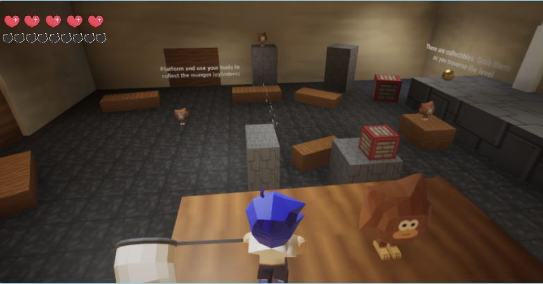
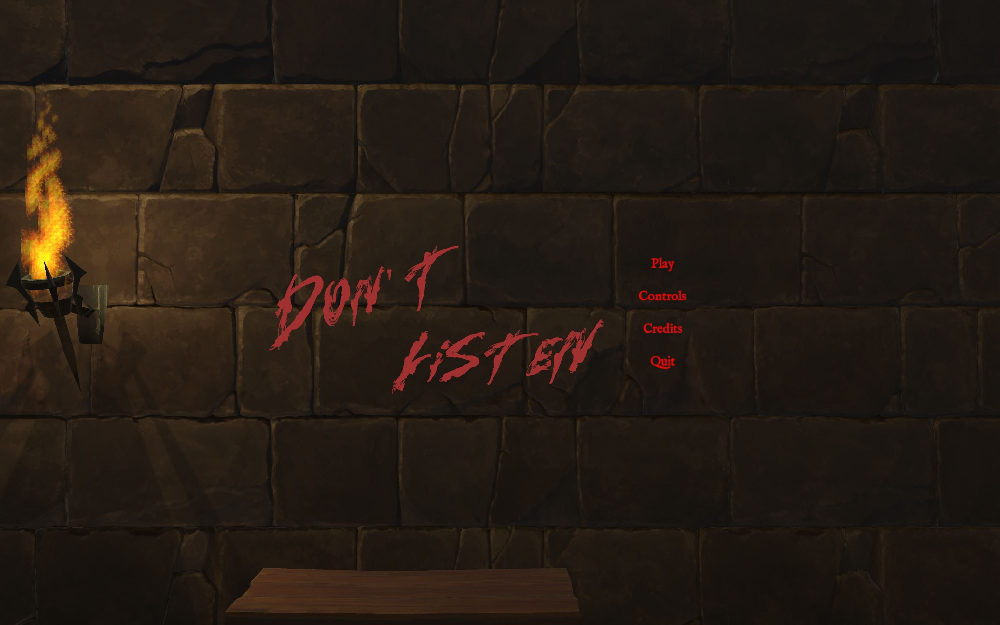
Don't Listen
This is a first person puzzle game created in Unity 3D in a team of 5 for our Game Design and Development II class (September - October 2022).
We were tasked to create a puzzle game set in the world of Ethshar, and this is our product after five weeks.
I served as the Version Control Lead, a 3D Designer, and a Programmer.
Press the button below to head to the Itch.io page!
Ammo and Alchemy
This is a top down shooter created in Unity 3D in a team of 5 for our Game Design and Development II class (November - December 2022).
We were tasked to create a game set in the world of the Dresden Files, and after five weeks, this is our product.
I served as the 3D Design Lead, Version Control Lead, Level Design Lead, and a Programmer.
Press the button below to head to the Itch.io page!
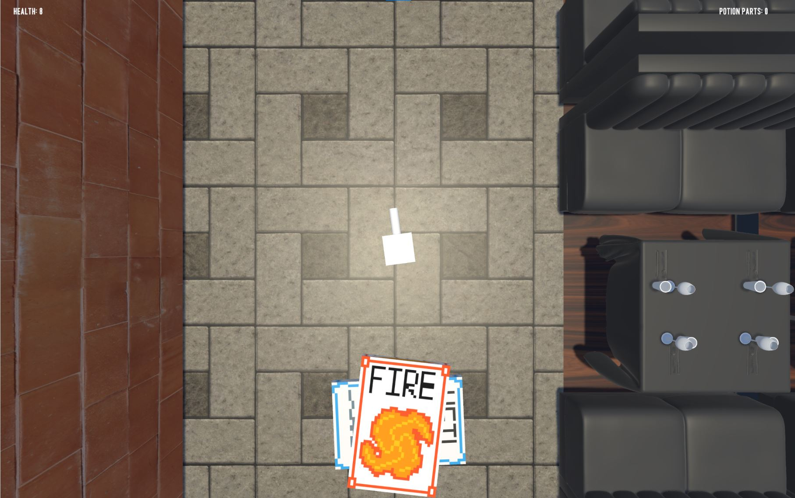